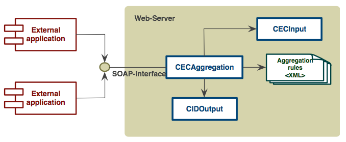

Tesis de grado
Mejora de correctitud en el desarrollo de sistemas de software, aplicando el paradigma de desarrollo en roles DCI
Por: Timoteo Ponce Ortiz
Problema
Aproximadamente 300 millones de usuarios de MSWord en el mundo
Aproximadamente 40 millones de documentos creados cada día
Millones de ellos contienen imágenes
localizadas y personalizadas
y alguien cambia el tamaño de página
...
y ahora hay millones de problemas


El problema
Inconsistencia entre que el usuario quiere y lo que el programa hace
Necesidad constante de modificar el programa
Costos elevados de soporte/mantenimiento
Costos elevados de desarrollo/Ingresos reducidos
Solución propuesta
Situación deseada
Programas consistentes con lo que los usuarios esperan
Programas flexibles para evolucionar
Reducir costos de desarrollo
Técnicas propuestas
Diseño guiado por responsabilidades
Diseño guiado por comportamiento
Datos, Contextos e Interacciones (DCI)
DCI - Datos, Contextos e Interacciones (Intro)
- Modelo arquitectónico + paradigma de desarrollo
- Basado en conceptos de comunicación humana
- Legible y reutilizable
- Propuesto por Trygve Reenskaug (MVC)
Motivación
Nuestros problemas pueden ser resueltos usando DCI
DCI es una arquitectura conceptual
Carece de herramientas que permitan su aplicación
Objetivo del trabajo
Mejorar la correctitud en el desarrollo de sistemas de software,
aplicando el paradigma de desarrollo basado en roles DCI,
a través de la elaboración de un arquetipo de desarrollo
Objetivos específicos
- Localizar el trabajo para el entorno de Swissbytes
- Definir indicadores de desarrollo
- Elaborar arquetipo DCI
- Elaborar prototipo DCI
- Evaluar prototipo con indicadores
- Analizar ventajas-desventajas del prototipo
DCI
DCI

DCI es una esquema de diseño que a través de elementos naturales de la comunicación, permite reflejar el comportamiento de una aplicación de software hacia los usuarios finales.
En DCI un sistema se define por..
lo que es
lo que hace
lo que es: lo que es estable y no cambia
lo que hace: lo que es dinámico y cambia frecuentemente
DCI - ejemplo
- ADN
- Huella digital
- Tipo de sangre
DATOS
DCI - ejemplo

- Administrador
- Madre de familia
- Conductora
ROLES
DCI - ejemplo
- Administrador > Oficina
- Madre de familia > Casa
- Conductora > Carretera
CONTEXTOS
| Datos | Contextos | Roles | Interacciones |
|---|---|---|---|
| Dabeyba | Oficina | Contadora | Cajeros, Vendedores |
| Tobias | Casa | Padre de familia | Hijos, Esposa |
| Julio | Calle | Mago | Padres de familia, payasos |
| Rory | Casa | Cocinero | Esposa...ella manda |
Daveyba quiere realizar su declaración de impuestos como trabajador dependendiente durante el día, y como trabajador independiente cuando trabaja desde casa en las noches.
DCI → Caso de uso
| Objetivo | Realizar declaración de impuestos mensual |
|---|---|
| Roles | Trabajador independiente |
| Pre-condiciones |
|
| Acciones |
|
| Post-condiciones | .... |


context ComprobanteFinancieroContext{
def execute(context, userName, periodo)={
def contador = findBy("name",userName) with ContadorRole
def service = context.inject ReportesService.class
def report = service.generarComprobante(contador,periodo)
if contador.balance(report) == STABLE {
service.consolidarReporte report
contex.log "Reporte diario para $periodo consolidado"
return Results.SUCCESS
}
return Results.FAILURE
}
}
Requerimientos DCI
- Compatible con ambientes de producción Java
- Programación multi-paradigma
- Modelo computacional dinámico
- Composición de objetos
- Contextos independientes de ejecución
Scala
Arquetipo de desarrollo
Arquetipo de desarrollo
- Desarrollado como plantilla para ambientes Java
- Orientado a la integración
- Basado en estándares
- Basado en componentes de producción reales
- Proyecto público open-source
Arquitectura conceptual
Arquitectura de componentes
Notas del proceso de desarrollo
XP + Scrum
3 entregas, 4 meses
Integración continua
Medición continua
Arquetipo DCI

Prototipo DCI
| Categoría | LOC | Equipo |
|---|---|---|
| Small - Pequeño | 5000 → 20000 | 1 → 2 |
| Average - Mediano | 20000 → 100000 | 3 → 5 |
| Large - Grande | 100000 → 300000 | 5 → 10 |
Métricas
| Dinámicas | Tiempo de actividad, versiones publicadas, peticiones completadas, peticiones pendientes, tiempo resolución petición |
|---|---|
| Estáticas | Archivos, líneas de código, código documentado, cobertura de pruebas, complejidad ciclomática, tiempo de respuesta, latencia, uso de memoria |
CECAggregation
CECAggregation
| Actividad en producción | 38 meses | LOC | 9628 |
|---|---|---|---|
| Versiones publicadas | 4 | Código documentado | 65% |
| Peticiones resueltas | 120 | Complejidad | 17.8 |
| Peticiones activas | 35 | Cobertura de pruebas | 77% |
| Resolución petición | 2 días | Tiempo de respuesta | 250ms |
| Archivos | 112 | Uso de memoria | 29696 KB |
CECAggregation - DCI
XP + Scrum
8 entregas, 2 lanzamientos, 2 meses
CECAggregation - DCI: Métricas
| Métrica | Original | DCI | Delta |
|---|---|---|---|
| Archivos | 112 | 74 | 30 (34%) |
| LOC | 9628 | 5667 | 3961 (41%) |
| Código documentado | 65% | idem | idem |
| Complejidad | 17.8 | 12.4 | 5.4 (30%) |
| Cobertura de pruebas | 77% | idem | idem |
| Tiempo de respuesta | 250ms | 270ms | -8% |
| Uso de memoria | 29696 KB | 33792 KB | -13% |
CECAggregation - DCI: Indicadores
| Indicadores | Original | DCI |
|---|---|---|
| Desviación de estimación | 10 | 7 |
| Desviación de entrega | 5 | 3 |
| Errores por iteración | 23 | 17 |
| Errores por lanzamiento | 14 | 4 |
| Tiempo de arreglo de errores | 5 | 1 |
| Tiempo de aplicación de cambios | 7 | 3 |
| Tareas de soporte por lanzamiento | 28 | 10 |
| Retorno de inversión perdido | 20 | 10 |
CECAggregation - DCI
Aplicación reducida
Revisiones de código positivas
Complejidad reducida
Completamente compatible
Resultados
Costos de desarrollo reducidos
Reducción de tiempos de soporte
Reducción de complejidad
Intencionalidad del código incrementada
Resultados Inesperados
Lenguaje de programación Trygve
The trygve language project - Building a DCI-centric language from the ground up
Scala como lenguaje base de nuevos componentes
Casos de uso como reemplazo de user-stories
Recomendaciones
Incluir soporte Trygve en el arquetipo
Incluir soporte de micro-services
Incluir integración del modelo de concurrencia de Actores